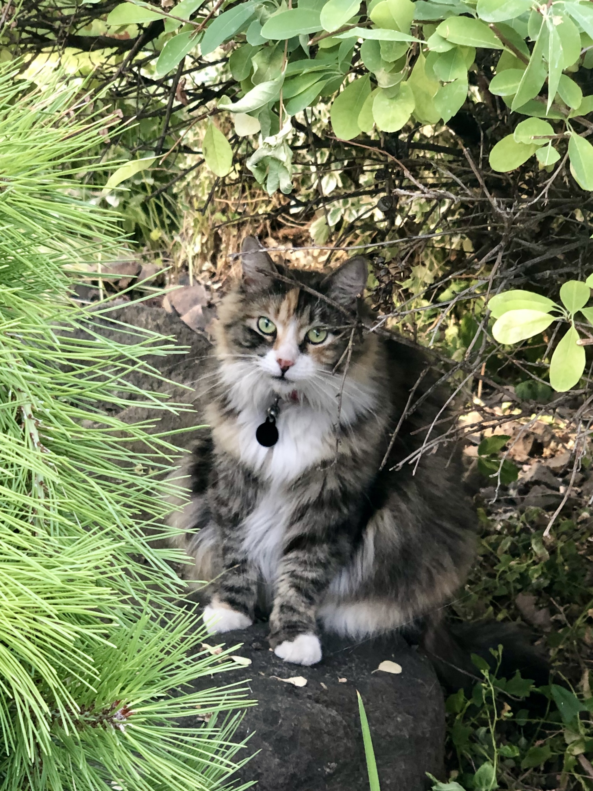

Sadie is a English Cream Golden Retriever that was born in April of 2024. She's still young and full of energy, and her favorite chew toy recently has been Will's socks. She is convinced she's a lap dog, weighing in at 60 pounds, and will try to climb onto your lap if you give her a chance. She is a very sweet puppy and keeps Jared and Kellee busy with her constant sprinting around and obsession with the squirrels in the backyard. She tries her best to be friends with the grouchy cat Nugget and pretty much anyone that walks through the door. Her favorite pastimes include protecting the yard from neighborhood cats, barking at her own shadow, and going through garbage cans looking for treasures. She keeps life for the Balcoms very entertaining and is always around when someone needs some extra love.
Nugget is a long-haired Calico cat that was adopted by the Balcom family in 2014. She was a barn cat of a family friend and the Balcom family wanted a cat to help keep the mice away. Little did they know that Nugget would not be very good at catching mice, but very good at killing snakes. She has a lot of personality for a little cat, often sending murderous glares to the newest addition to the family, Sadie. Nugget is a large cat and has no problem making sure Sadie knows who's in charge. Although Nugget spends a lot of her time in the garage, when she does come inside, she loves to spend time on Will or McKaila's bed. Her patience is low for people most times, but she can be very loving every once in a while. She's getting older, and in her old age she's becoming more accepting of love from strangers. Nugget is pretty vocal, often voicing her concerns with her near empty food dish. Nugget keeps the Balcoms on their toes, changing her attitude in a matter of seconds. Nugget is a very important part of the Balcom family.